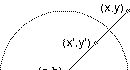

Here we describe some of the work done in projects by Barbara Bemis, Colleen Clancy, Tatiana Cogevina, and Elizabeth Evans.
| A. After motivating inversion by comparison to reflection, we present Apollponius' synthetic definition and an analytic equivalent. |  |
| B. Inversion has several properties readily deduced from the definition. | |
| C. Associated with inversion in some collections of circles is a limit set, often a fractal. This is analogous to the fractals generated by IFS; generally, circle inversion limit sets can be viewed as nonlinear IFS. | |
| D. Sometimes, the limit set is more complicated if the circles overlap. Here are some examples. If at the point of intersection, the angles between the tangents is a rational multiple of pi, precise algebraic relations hold between the inversions. These have implications for computing the limit sets. | |
| E. In these animations we show how changing one or more of the inverting circles can affect the limit set. Perhaps more clearly than with other animations, here we get a good sense of fractal motion: the same pattern of movement repeated on smaller and smaller scales. | |
| F. Here is Benoit Mandelbrot's method for rapidly generating images of some limit sets. | |
| G. Here we show how to compute the dimension of some limit sets. | |
| H. Here we present a variant of the limit set, forbiding all combinations of inversions that are expansions. | |
| I. Here we use driven IFS to map which combinations of inversions result in expansions when the inverting cirlces overlap. |